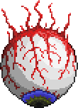
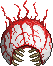

크툴루의 눈은 밤에 소환가능한 보스로, 보통 첫번째로 싸우게될 보스이다.
|  페이즈 1 |
 페이즈 2 |
||
| 클래식 | 전문가 | 마스터 | |
|---|---|---|---|
| 체력 | 2800 | 3640 | 4641 |
| 페이즈1 방어력 | 12 | ||
| 페이즈1 공격력 | 15 | 30 | 45 |
| 페이즈2 방어력 | 0 | ||
| 페이즈2 공격력 | 23 | 36,40 * | 54,60 ** |
| * 체력이 145 이하로 내려갈시 ** 체력이 185 이하로 내려갈시 |
|||
플레이어의 체력이 200 이상, NPC 가 3명 이상, 방어력이 10 이상, 아직 크툴루의 눈을 격파한 적이 없다면 매 밤마다 1/3 확률로 나타나는 보스이다. 밤에 플레이어가 수상해 보이는 눈 아이템을 사용해 직접 소환하는 것도 가능하다.
소환되면 플레이어에게 3번 돌진 뒤 "크툴루의 하인" 이라는 잡몹을 여럿 소환한다. 이 패턴을 반복하다가 체력이 50% 이해로 내려갈 시 페이즈2 로 넘어가게 되며 눈알이 사라지고 입이 튀어나오게 된다. 잡몹 소환 패턴을 사라지지만 돌진 패턴이 강화되므로 주의해야한다. 돌진을 잘 피하면서 뎀을 계속 주도록 하자.
크툴루의 눈을 처치하면 플레이어의 월드에 따라 데모나이트 주괴, 또는 크림테인 주괴를 드랍한다.